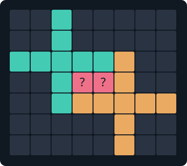

A forbidden pair of nonacube crosses
Two crosses can enclose a hole that admits local fillings, yet every sufficiently large surrounding filling fails. We found such a pair and checked its impossibility proof.

The exact pair
Write the cross as
\[P=\{(0,0,0),(\pm1,0,0),(\pm2,0,0),(0,\pm1,0),(0,\pm2,0)\}.\]The pictured pair is \(P\) and \(P+(3,-2,0)\). Its two planar holes are at \((1,-1,0)\) and \((2,-1,0)\). The certificate uses an equivalent coordinate system: the crosses lie in the other coordinate plane and their centers differ by \((0,3,-2)\).
What the proof establishes
Fix both crosses and require every lattice cube within Chebyshev distance two of either cross to be covered. This is a finite target of 480 cubes, including the 18 fixed cubes. Enumerate every placement that covers a target cube, allowing all three spatial orientations and integer translations.
The 3,008 placement variables include the two fixed copies. Every target cube must be covered exactly once. Overlaps are forbidden everywhere, including outside the target. Tiles may extend outside the target: there is no artificial container wall.
This finite system is unsatisfiable. Its emitted proof was independently verified with DRAT-trim, with no RAT-only steps. The geometric-to-Boolean reduction is separately regenerated by the replay script. An infinite lattice tiling containing the pair would satisfy these finite obligations, giving a contradiction.
Use as geometric markings
The existing sparse marking compiler encodes this forbidden pair and its rotated copies in 24 components, with 48 assigned values across the three orientations. Its audits verify that every resulting disagreement is exactly a symmetry copy of this forbidden relation. No positive training examples are needed for this certified exclusion.
This is a checked research certificate. The browser’s cold learner currently runs the earlier dead-point and pair-corona tests; it does not yet run this larger-region oracle or load the recorded exclusion. No learned marking has been bundled into its search.
Replay and scope
The result concerns cubic orientations and integer translations. It excludes this pair, not the tile itself, and does not determine the Heesch number. A bounded unsuccessful search would not have supplied this result: the finite formula has a checked contradiction.
- Exact point model, fixed pair and target · verification receipt
- Compressed Boolean formula · compressed proof trace
- Positive one-corona witness
Run node scripts/verify-nonacube-pair-obstruction.mjs for the current app model, positive witness and marking audit. Run python3 scripts/verify-nonacube-pair-obstruction.py --drat-trim /path/to/drat-trim to regenerate and check the contradiction. Omitting the last option uses the repository’s independent Python RUP checker.